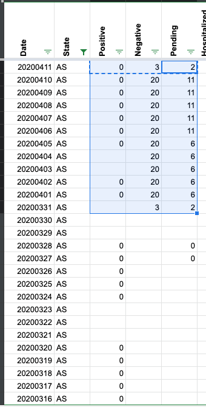
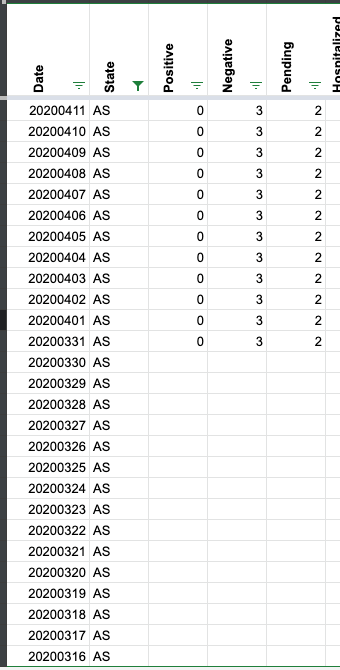

Fix historicals for American Samoa
Issue number 178
amandafrench opened this issue on April 11, 2020 at 9:12 am
As reported in #47, we were using the wrong source entirely for American Samoa for about ten days, and the error has persisted in some places ever since. The incorrect URL for Western Samoa was removed on the website from the “Best current source” link ONLY, but the screenshots from that incorrect page remained, and the incorrect URL remained in the spreadsheet as the main AS page in States Matrix. I have fixed it in the States Matrix tab. However, our historicals for American Samoa are all over the place and need to be corrected. The data is very infrequent, and much of it is coming from news sources. I will make the appropriate notes about this in the sheet and add comments here as needed to clarify sources and to correct the historical data.
Comments
Eagle EYES!
Before 
After 
Note of course for anyone viewing this and not on our private convos that those numbers come from https://www.samoanews.com/local-news/out-5-suspected-coronavirus-samples-3-test-negative-so-far
I have confirmed that the ONLY data we have about testing of American Samoa residents is from a news article from New Zealand dated 3/28: https://www.rnz.co.nz/international/pacific-news/412830/american-samoa-covid-19-test-negative
Therefore all historicals before that date should be 0, and everything after that date should be only Positive = 0, Negative = 1, and Pending = 2. Deaths are 0, but I don’t know if that should be null/No Data or 0. Help, @careeningspace?